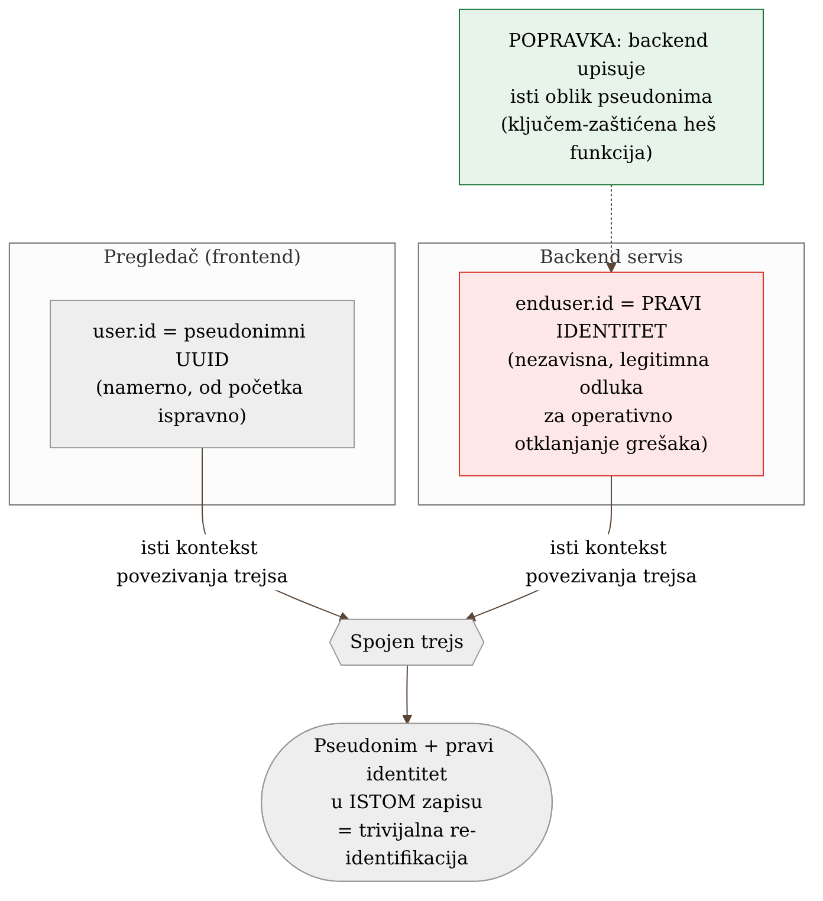
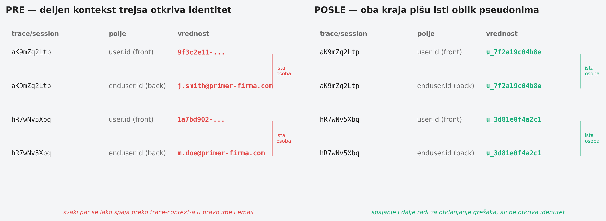

Poglavlje 25 — Privatnost u telemetriji
Program zaštite svedoka postoji tačno zbog jedne pretpostavke: da niko ne može da poveže novo ime sa starim životom. Svedoku se dodeli novi identitet, nova adresa, nova biografija — sve pažljivo odvojeno od prethodnog dosijea, koji ostaje zaključan kod jedne jedine agencije, sa striktno ograničenim pristupom. Zaštita ne puca zato što je novo ime loše osmišljeno. Puca onog trenutka kad dve različite institucije — recimo, bolnica i banka — slučajno počnu da koriste isti interni broj dosijea za istu osobu, ni ne znajući da taj broj postoji i na drugom mestu. Neko ko ima pristup samo jednoj od te dve institucije i dalje ne vidi ništa. Ali neko ko poveže ta dva zapisa preko zajedničkog broja odjednom ima staro ime, novu adresu, i sve što je zaštita trebalo da razdvoji — a nijedna od te dve institucije pojedinačno nije pogrešila. Pogrešio je sistem koji nije primetio da isti broj prolazi kroz oba.
25.1 Pitanje na koje ovo poglavlje odgovara
Telemetrija prikuplja sve što neko instrumentira, često i više od onoga što je iko planirao — identitet korisnika, IP adrese, parametri iz URL-a. Zašto "obriši to u pregledaču" nije dovoljno kad isti podatak putuje drugim putem koji taj filter ne dodiruje, i šta znači zapravo zatvoriti tu rupu, ne samo na jednoj tački nego kroz ceo lanac?
25.2 Kako je to urađeno — praktičan pregled
Otkriće: pseudonimno na jednoj strani, potpuno otkriveno na drugoj
Frontend aplikacija implementacije koju knjiga prati je namerno projektovana da šalje samo pseudonimni identifikator korisnika — nasumični UUID iz autentikacionog sistema, nikad ime ili email. To je bila ispravna, promišljena odluka od prvog dana. Problem je otkriven tek kad je neko proverio šta se dešava posle tog prvog koraka: pregledač prosleđuje standardni kontekst za povezivanje trejsova (isti mehanizam koji spaja jedan zahtev korisnika sa odgovarajućom obradom na serveru) ka backend servisu — a taj backend servis, potpuno nezavisno i sa sasvim drugim, legitimnim razlogom (operativno otklanjanje grešaka), upisuje pravi email korisnika na svoj deo istog trejsa. Kad se povuku dva dela istog trejsa zajedno, dva pseudonimna signala se pretvaraju u jedan potpuno identifikovan zapis — ne zato što je bilo koja strana pojedinačno pogrešila, nego zato što zajednički kontekst povezivanja spaja ono što je trebalo da ostane razdvojeno.
Verifikacija na stvarnim podacima, ne pretpostavka
Ovo nije bilo teoretsko razmatranje — implementacija je proverila na stvarnoj, živoj sesiji: pseudonimni identifikator na strani pregledača je praćen kroz desetine povezanih zahteva ka backend-u, i u velikoj većini njih je backend deo istog trejsa nosio pravi identitet korisnika. Drugim rečima, "pseudonimna sesija" je bila trivijalno rešiva do imena konkretne osobe direktno iz alata za pregled trejsova, bez ijednog dodatnog koraka pretrage u bilo kojoj bazi korisnika.
Zašto popravka mora ići na izvor, ne na filter
Prva instinktivna reakcija — dodati filter koji briše identifikujuće podatke iz URL-a i upita na strani pregledača — je već bila sprovedena, i bila je ispravna za signale koji nikad ne dodiruju backend. Ali taj filter, ma koliko temeljit, ne može ništa da uradi po pitanju onoga što se upisuje na server-side deo istog trejsa — jer taj upis se dešava potpuno odvojeno, u drugom sistemu, posle trenutka kad je pregledač već poslao svoj deo. Popravka mora ići na izvor problema: sam backend treba da prestane da upisuje pravi identitet, i da umesto toga upisuje isti oblik pseudonima koji frontend već koristi.
Izvedeni pseudonim, ne goli heš
Rešenje koje je implementacija projektovala ne koristi prost heš email adrese — jer je prostor mogućih email adresa dovoljno mali i predvidljiv da bi goli heš bio trivijalno razbijen unapred izračunatom tabelom. Umesto toga, pseudonim se izvodi kroz ključem-zaštićenu heš funkciju: ista email adresa uvek proizvodi isti pseudonim (što čuva mogućnost praćenja istog korisnika kroz vreme, korisno za dashboard-e), ali niko bez tajnog ključa ne može da krene unazad od pseudonima ka pravom identitetu. Uz to, implementacija drži jednu, strogo kontrolisanu mogućnost razrešenja unazad — administrativni endpoint koji, samo za ovlašćenu ulogu i uz potpuno audit-logovanje ko je koga razrešio i kada, vraća pravi identitet iza pseudonima za retke slučajeve kad je to stvarno operativno potrebno.
Šta popravka ne rešava — i zašto je to u redu
Implementacija je eksplicitno svesna granica sopstvene popravke: istorijska telemetrija, već zapisana pre promene, ostaje u sirovom obliku — pseudonimizacija nije retroaktivna, i stari zapisi jednostavno stare kroz redovnu politiku čuvanja. Ovo nije previd nego trezvena procena: retroaktivno prepisivanje već zapisanih podataka bi bilo nesrazmerno skupo u odnosu na korist, kad period čuvanja i onako uskoro obriše te zapise. Implementacija takođe pravi jasnu, dokumentovanu razliku između identifikatora osobe (koji se nikad ne beleže u novim poljima) i identifikatora imovine/resursa nad kojim je upit izvršen (koji se namerno i dalje beleže, jer identifikuju šta je upitano, ne ko je upitao) — razlika koja sprečava da se pseudonimizacija preterano primeni tamo gde nije ni potrebna ni korisna.


25.3 Analitički deo — poznat obrazac curenja, sa preciznim imenom
Pseudonimizacija ostaje lični podatak — i to menja obavezu
Zvanična smernica o pseudonimizaciji je nedvosmislena: pseudonimizovan podatak ostaje lični podatak u punom pravnom smislu, jer je re-identifikacija i dalje moguća u principu — razlika prema potpuno anonimizovanom podatku (koji izlazi iz obaveze u potpunosti) je oštra i namerna. Ovo znači da pseudonimizacija implementacije nije "rešila" pravnu obavezu — smanjila je rizik i pooštrila minimizaciju, ali podatak i dalje zahteva istu pažnju kao svaki drugi lični podatak, samo sa manjim rizikom po pojedinca ako dođe do curenja.
Ono što se dogodilo ima precizno ime u literaturi: napad povezivanjem
Scenario koji je implementacija otkrila — dva naizgled bezopasna, pseudonimna skupa podataka koji zajedno otkrivaju identitet čim se povežu preko zajedničkog ključa — je formalno opisan u literaturi o inženjeringu privatnosti kao napad povezivanjem (linkage attack): sastavljanje identifikujućeg zapisa kombinovanjem ciljanog skupa podataka sa pomoćnim ili spoljnim izvorom. Zvanična smernica o pseudonimizaciji ide korak dalje i imenuje tačno ovaj mehanizam kao razlog zašto preporučuje tranzakcione pseudonime (drugačiji po svakoj interakciji) umesto ličnih pseudonima (stabilan, ponovo korišćen svuda) — jer je upravo stabilan, deljen identifikator ono što povezivanje čini lakim. Implementacija je svesno zadržala stabilan pseudonim (radi longitudinalne analize po korisniku) uz punu svest o ovom kompromisu — razumna odluka, ali odluka koja mora ostati vidljiva, ne podrazumevana.
Ključem-zaštićena heš funkcija je zvanično preporučena, ne proizvoljna
I zvanična smernica o pseudonimizaciji i šira tehnička literatura eksplicitno upozoravaju protiv golog, nezaštićenog heša niskoentropijskih identifikatora poput email adresa — upravo zbog rizika unapred izračunatih tabela. Preporučen pravac je ključem-zaštićena jednosmerna funkcija, sa dovoljno entropije u samom ključu. Dodatna, suptilnija napomena iz iste literature, direktno relevantna: isti ključ korišćen u dva različita sistema ponovo uvodi mogućnost povezivanja — ako dva servisa heš-uju istu email adresu istim ključem, njihovi izlazi se poklapaju i mogu se spojiti, poništavajući svrhu izolacije. Implementacija ovo rešava tako što ključ ostaje jedan, unutrašnji, čuva se odvojeno od bilo kog eksternog sistema.
Pravo na brisanje sudara se sa arhitekturom sistema za telemetriju
Šira analiza pokazuje da je pravo na brisanje ličnih podataka iskren, nerešen problem trenja za većinu sistema za metrike i logove — mnogi su arhitektonski projektovani kao samo-za-dodavanje (append-only), upravo radi pouzdanosti i integriteta revizije, bez ugrađene mogućnosti brisanja po pojedinačnom subjektu. Ovo znači da je runbook za brisanje na zahtev — koji implementacija tek planira, ne još ima gotov — suštinski važan korak, ne administrativna sitnica: bez njega, obaveza brisanja se ili ignoriše ili rešava grubim silom (brisanje celog perioda podataka umesto samo jedne osobe).
Kontrafaktički scenario: šta filter na pregledaču ne bi uhvatio
Zamislimo tim koji je stao na "pregledač šalje samo pseudonim, gotovo" — i nikad nije proverio šta se dešava sa istim trejsom posle prve granice sistema. Svaki dashboard i svaki alat za pretragu trejsova bi i dalje izgledao ispravno: pseudonim vidljiv, ime nigde direktno u UI-ju. Ali bilo ko sa pristupom alatu za pregled trejsova bi mogao, u nekoliko klikova, da prati jedan trejs od pseudonima do stvarnog imena — otkriveno bi samo u trenutku kad neko stvarno proveri, ili gore, kad neko zloupotrebi upravo tu mogućnost. Utisak privatnosti bi postojao; stvarna privatnost ne bi.
Vratimo se programu zaštite svedoka s početka poglavlja. Novi identitet sam po sebi nije dovoljan — zaštita drži samo ako svaka institucija koja dodiruje taj identitet zna da ne sme deliti isti unutrašnji broj sa bilo kojom drugom. Pseudonimizacija u telemetriji radi po istom pravilu: nije dovoljno da jedan sloj sistema bude pažljiv. Mora biti pažljiv ceo lanac, od prvog signala do poslednjeg mesta gde se dva signala mogu sastati.
25.4 Skupljena pravila iz ovog poglavlja
- Ne veruj da je pseudonimizacija na jednoj tački sistema dovoljna — proveri da li se isti identitet, u bilo kom drugom obliku, upisuje negde nizvodno gde se dva signala mogu povezati preko zajedničkog konteksta.
- Koristi ključem-zaštićenu heš funkciju za pseudonime, nikad goli heš niskoentropijskog identifikatora poput email adrese — i drži ključ jedan, interni, nikad deljen između sistema koji bi inače trebalo da ostanu nepovezani.
- Zapamti da pseudonimizovan podatak ostaje lični podatak u punom pravnom smislu — smanjuje rizik, ne uklanja obavezu.
- Razdvoji identifikatore osobe (nikad beleženi u novim poljima) od identifikatora resursa nad kojim je nešto urađeno (legitimno beleženi, jer identifikuju šta je upitano, ne ko je upitao) — ne primenjuj pseudonimizaciju tamo gde nije ni potrebna.
- Planiraj runbook za brisanje na zahtev unapred, znajući da većina sistema za metrike i logove nije arhitektonski projektovana za brisanje po pojedinačnom subjektu — čekanje da zahtev stvarno stigne je prekasno da se prvi put smišlja rešenje.
25.5 Vežba za čitaoca
Pronađi jedan identifikator u tvom sistemu koji je pseudonimizovan na jednoj tački (frontend, jedan servis, jedan log). Prati taj identifikator nizvodno — kroz svaki servis koji dodiruje isti zahtev ili istu sesiju — i proveri da li ijedan od njih upisuje pravi identitet negde drugde u istom kontekstu. Ako je odgovor da, upravo si pronašao istu vrstu curenja kao u ovom poglavlju.
Izvori korišćeni u analitičkom delu
- EDPB Guidelines 01/2025 on Pseudonymisation
- ICO — Pseudonymisation guidance
- SoK: Managing risks of linkage attacks on data privacy — PETS 2023
- ENISA — Pseudonymisation techniques and best practices
- NIST SP 800-224 (draft) — HMAC specification
- Axiom — The Right to Be Forgotten vs. Audit Trail Mandates